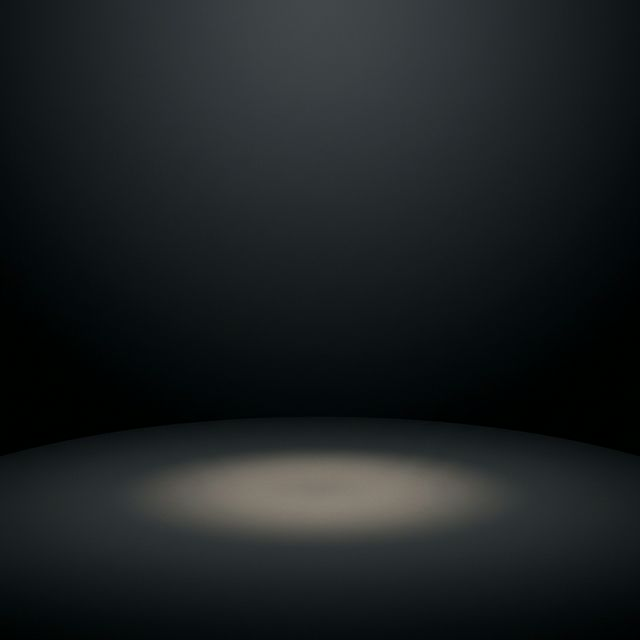

CONHEÇA NOSSO CAFÉ
Um porto seguro para recarregar as energias e celebrar a paixão pelo pedal.
PONTO DE APOIO
Disponibilizamos suporte para pequenas manutenções rápidas, carregamento de e-bikes e, claro, um café por conta da casa para nossos clientes.
- ✅ Wi-fi liberado para subir seu treino pro Strava
- ✅ Suporte para estacionar sua bike com segurança
- ✅ Tomadas para recarregar seu GPS ou E-bike
